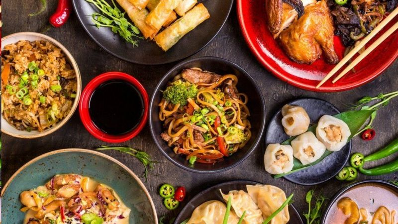

那些被发明的“外国菜”：从美国“第一中餐”左宗棠鸡说起
今天，我们饮食的多样性要远远超过历史上任何时期。即便在一个不起眼的小镇，你也能在街道两边发现印度餐馆、日本寿司店或者中餐外卖餐馆。在大一点的城市，特色非洲面包（spongy
injera）、韩国石锅拌饭、约旦茄泥酱、四川麻婆豆腐、墨西哥辣椒酱、意大利面、越南米粉等等各国风味美食应有尽有。
然而，你心目中的那些外国菜往往却是在离你家不远的地方发明出来的。在它号称的原产国，这些美食往往并不存在。
比如，在美国和很多其他国家，“左宗棠鸡”是一道最受欢迎的中国菜。从旧金山到奥马哈（Omaha）、从内布拉斯加（Nebraska）到伦敦的各地中餐馆里都有这道菜：酥脆炸鸡块勾上糖芡汁做成的所谓“中国传统美食”。
但是英国美食家、厨师扶霞（Fuschia Dunlop）在这道菜号称的起源地--中国湖南却发现，根本没人听说过“左宗棠鸡”。实际上，中国其他地方的人也都没听说过这道菜，并且它的味道和正宗湖南菜也毫无相似之处。

左宗棠是一个真实的历史人物。这位中国将领生于中国湖南省，曾经参与镇压太平天国叛乱。这场暴力叛乱发生于19世纪中期，其首领自称是耶稣基督之弟，叛乱军队差一点就推翻了清朝的统治。但是，据史书记载，左宗棠将军一直到去世也没对炸鸡产生过任何特殊兴趣。扶霞写道，这道中国菜的发明人--湖南籍厨师彭长贵才是把左宗棠将军的名字和炸鸡块绑在一起的始作俑者。
彭长贵是一位为中国国民政府服务的著名厨师。1949年中国大陆易手后他去了台湾。离开中国大陆后，他自己创制了这道菜，但是最初它的味道中所含的酸味要多于甜味。纽约餐馆经营者在台北品尝到彭长贵发明的左宗棠鸡后，就把这道菜带到了美国。随着时间的推移，这道菜的味道也不断演变，最终形成了和最初的味道截然不同的偏甜、粘稠口味，从而迎合比湖南人更喜甜不喜酸的美国消费者的胃口。
2014年的纪录片《寻找左宗棠》探寻了这道菜的起源，并且把目前流行版本的“左宗棠鸡”的照片展示给了时年96岁的彭长贵。他看了照片，嘴里嘟囔着说：“简直瞎胡闹。”
另一道变种的美味中国菜“炒面三明治”也有同样的故事。这道菜是用两片面包中间夹上浇上深色酱汁的炒面做成的。自20世纪中叶开始，位于波士顿以南的马萨诸塞州Fall
River地区的中餐馆就开始流行这道能提供足够热量的廉价午餐菜式。
在美国很多地区还流行炒杂碎-人们认为这道菜起源于向美国输出大量移民的中国粤西地区。
在世界其他地方，炒杂碎是用豆芽、肉丝和种类无穷无尽的各种蔬菜为原料爆炒，然后浇上浓厚的芡汁做成。它甚至成了什锦烹调法的代名词。美国炒杂碎则由通心粉、牛肉末和各色蔬菜做成，非常流行。